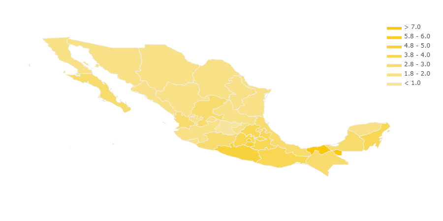

Geographical distribution of votes for all coalitions
Side to Side distribution of votes of each coalition
PRI had a stronghold in a handful of states. PAN had the majority of its support coming from historical conservative states plus states from the north. The PRD coalition showed a Nort- South divide with most of its supporters living in the south or Mexico City. There was a very high participation in Tabasco and Yucatan compared to other states.
Contribution to each coalition "per voter votes" from each state. Darker colors correspond to higher contribution

PRI geographical distribution of votes

PAN geographical distribution of votes

PRD geographical distribution of votes